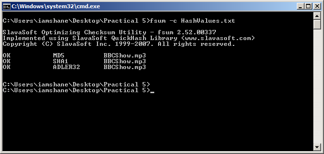

Audio
In this section I will be seeing how the three hash functions perform when generating a hash function for the audio file which is just under 30 minutes in duration and 12.6mb in size. The file is a podcast for a BBC history show.
MD-5 | SHA-1 | Adler32
For this test I was going to get FSUM to create the hash values for the three algorithms at the one time and this was done using the following command fsum -md5 -sha1 –adler BBCShow.mp3>HashValues.txt and it created the below hash values in under a second.
8fe27ac006ecbf77bd1e0eb000eb90c7 *BBCShow.mp3
bae8f8d33c0fe9f4122ff17e71952e5278dff0ef ?SHA1*BBCShow.mp3
82d33b78 ?ADLER32*BBCShow.mp3
Next I wanted to verify the integrity of the hash value and to prove that it should still work as a long as the files or hash values had not changed. The screenshot below shows the command that was used and the result which was as expected.
Hash Value Files
Reference
All the information used in this website has been sourced from the following locations:
An Illustrated Guide to Cryptographic Hashes. 2011. An Illustrated Guide to Cryptographic Hashes. [ONLINE] Available at: http://unixwiz.net/techtips/iguide-crypto-hashes.html. [Accessed 24 November 2011].
Bruce Schneier, 1995. Applied Cryptography: Protocols, Algorithms, and Source Code in C, 2nd Edition. 2 Edition. Wiley.